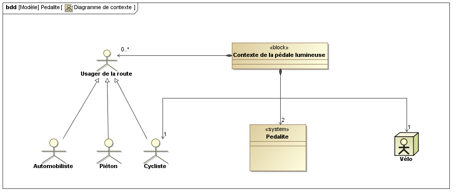

LE CONTEXTE
Le diagramme de contexte de La pédale lumineuse répertorie les éléments faisant partie de son environnement.

Diagramme de contexte de la pédale KPL200
- On suppose que dans un contexte normal, il y a 2 pédales sur 1 vélo et 1 cycliste sur ce vélo;
- Les usagers de la route peuvent être des cyclistes, des automobilistes ou des piétons.
Created with the Personal Edition of HelpNDoc: Free EPub producer